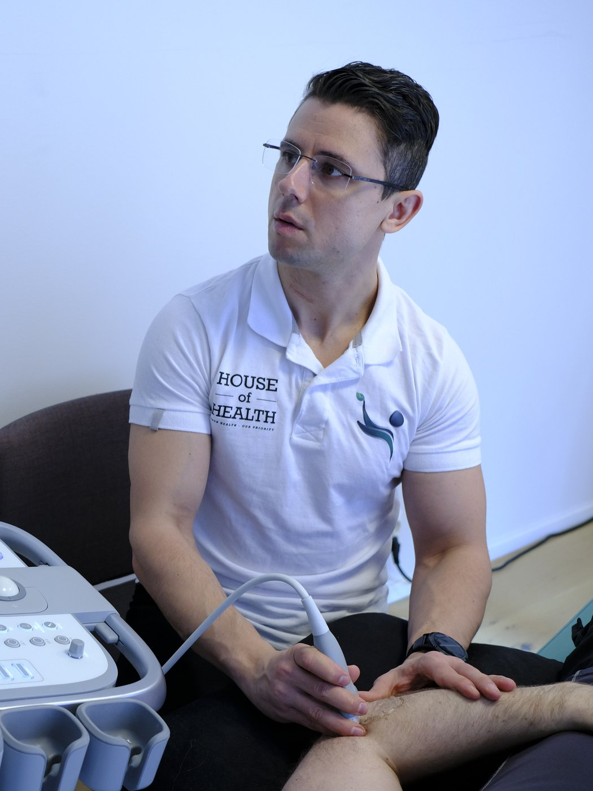

Hva vi tilbyr
Mine tjenester

Spesialkompetanse
Diagnostisk ultralyd og injeksjonsbehandling
Hva er diagnostisk ultralyd?
Diagnostisk muskel- og skjelettultralyd gjør det mulig å undersøke muskler, sener, leddbånd, nerver, slimposer og leddflater i sanntid og med høy oppløsning. Undersøkelsen er smertefri og strålefri, og gir svar med en gang. Fordi jeg kan se strukturene mens du beveger deg, gir ultralyd ofte mer informasjon om funksjon enn et stillbilde fra MR eller CT – og egner seg spesielt godt til å vurdere bløtvev og til å følge tilhelingen av en skade over tid.
Tilstander som kan utredes og behandles
- Skulder: rotatorcuff-plager, kalkskulder, slimposebetennelse (bursitt) og frozen shoulder
- Albue: tennis- og golferalbue
- Hånd og håndledd: karpaltunnelsyndrom, triggerfinger og seneskjedebetennelse
- Hofte og lår: slimposebetennelse og plager i senefester
- Kne: hopperkne, senebetennelser og artrose
- Ankel og fot: akillesplager og plantar fasciitt
- Generell artrose og senebetennelser i de fleste ledd
Ultralydveiledet injeksjonsbehandling
Når en injeksjon er aktuell, settes den under direkte ultralydveiledning. Da ser jeg nålen hele veien og kan legge substansen nøyaktig der den skal virke – det gjør behandlingen både mer presis og tryggere. Aktuelle injeksjoner er blant annet:
- Kortison – mot akutt betennelse og hevelse
- Hyaluronsyre – smøring og smertelindring ved artrose, særlig i kne og hofte, som et ikke-steroid alternativ
- PRP (platerikt plasma) – kroppens egne vekstfaktorer for å stimulere tilheling ved sene- og leddplager
- Kalkskylling (barbotage) – ved kalkskulder
Hyaluronsyre
Hyaluronsyre finnes naturlig i leddvæsken og bidrar til smøring og demping i leddet. Ved artrose kan en injeksjon gi bedre bevegelighet og mindre smerte over tid, og er et alternativ for deg som ønsker en ikke-steroid behandling.
PRP – platerikt plasma
PRP utvinnes fra en liten blodprøve fra deg selv. Blodet spinnes ned slik at blodplater og vekstfaktorer konsentreres, og injiseres deretter i det aktuelle området for å stimulere kroppens egen tilheling. Behandlingen er godt dokumentert ved blant annet kneartrose og enkelte seneskader.
Samarbeid med lege
All medikamentell behandling og kortisoninjeksjon skjer i samråd med din fastlege eller henvisende legeinstans. Vurdering gjøres i fellesskap der det foreligger enighet om tilstand og indikasjon for injeksjon, før behandling settes i gang. Ta gjerne kontakt hvis du lurer på om dette er aktuelt for deg.